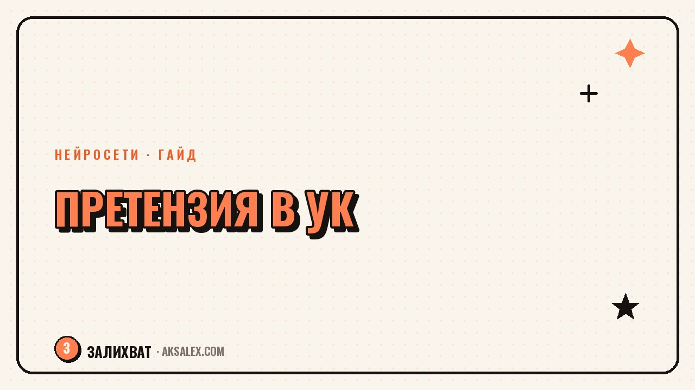

Как составить претензию в УК с помощью нейросети

Протекающий потолок, холодные батареи в январе, грязный подъезд месяцами или начисления за услуги, которых не было - рано или поздно с этим сталкивается почти каждый собственник квартиры. Написать внятную претензию в управляющую компанию самому не так легко - нужно знать, на какие пункты договора и закона ссылаться. Нейросеть не заменит юриста в сложном споре, но отлично справляется с рутиной: собирает факты в структуру и подбирает формулировки.
Почему претензию вообще стоит писать, а не звонить на горячую линию
Звонок на горячую линию решает проблему редко и почти никогда не оставляет следа - доказать факт обращения будет нечем. Письменная претензия - другое дело: официальный документ, который УК обязана принять и на который обязана ответить в установленный срок. Если дойдёт до жалобы в жилищную инспекцию или суда, эта бумага станет доказательством, что ты пытался решить вопрос мирно.
Документ со ссылками на пункты договора управления и нормы Жилищного кодекса показывает, что собственник знает свои права - с ним проще согласиться, чем спорить.
Что нейросеть умеет в этой задаче, а что нет
Нейросеть хорошо собирает разрозненные факты в связный текст с понятной структурой: шапка, описание нарушения, ссылка на норму, требование, срок ответа. Она же подскажет формулировки и уберёт из черновика эмоции.
Что нейросеть не проверит за тебя
- Актуальность статьи закона - формулировки меняются, перепроверяй по открытым источникам или у юриста
- Факты по твоему дому - даты, номер акта, суммы в квитанции нужно сверять с документами самому
- Юридическую стратегию в сложных случаях - если сумма ущерба большая, разговор с юристом не заменить
Пошаговый алгоритм: от фактов до готового текста
Шаг 1. Собери факты
Выпиши: что произошло, с какого числа, сколько раз обращался устно, есть ли фото или видео, какие суммы в квитанции. Чем точнее факты, тем конкретнее получится текст - нейросеть работает с тем, что ты ей дал.
Шаг 2. Сформулируй запрос
Попроси нейросеть написать претензию по конкретной ситуации и укажи структуру: шапка с реквизитами УК, описание проблемы с датами, ссылку на договор управления, требование и срок ответа (обычно 10-30 дней).
Шаг 3. Проверь черновик
Сверь даты, суммы и адреса с оригинальными документами. Убедись, что в конце есть точное требование: вернуть деньги, устранить неисправность, провести перерасчёт.
Шаг 4. Отправь правильно
Подай документ в двух экземплярах через приёмную УК с отметкой о получении, заказным письмом с уведомлением о вручении или через личный кабинет на сайте компании. Устная передача не считается.
Что обязательно должно быть в тексте
Претензия без конкретики работает хуже разговора с соседкой на лавочке - её легко проигнорировать.
| Блок документа | Что туда входит |
|---|---|
| Шапка | Адрес УК, ФИО и адрес собственника, дата |
| Описание проблемы | Что произошло, с какого числа, сколько раз обращался |
| Основание | Пункт договора управления или статья Жилищного кодекса |
| Доказательства | Фото, видео, акты осмотра, показания счётчиков |
| Требование | Устранить, пересчитать, вернуть деньги, провести ремонт |
| Срок ответа | Сколько дней есть у УК на реакцию |
Претензия без даты, подписи и чёткого требования - всего лишь письмо. С ними - уже документ, который можно предъявить в суде.
Если УК не ответила или ответила отпиской
Закон даёт УК срок на ответ - если он прошёл без реакции, следующий шаг - жалоба в государственную жилищную инспекцию. Дай нейросети текст первой претензии и попроси составить жалобу со ссылкой на бездействие.
Отписка вроде «ваше обращение принято к сведению» - тоже повод двигаться дальше: она вместе с копией претензии показывает, что собственник действовал добросовестно, а компания игнорировала проблему.
Какие нейросети подходят для таких документов
Для разовой претензии подходит практически любая современная текстовая нейросеть - разница в основном в удобстве интерфейса, а не в качестве текста.
- Общие текстовые нейросети - подходят для большинства претензий, хорошо держат деловой стиль
- Специализированные юридические сервисы - иногда точнее со ссылками на нормы, но часто платные
- Голосовой ввод плюс нейросеть - удобно, если проще надиктовать факты вечером
Частые вопросы
Нужен ли юрист, если претензию уже написала нейросеть?
Для типовых ситуаций - протечка, грязь в подъезде, неверные начисления - готового текста обычно достаточно. Юрист нужен, если сумма ущерба большая или дело идёт к суду.
Как доказать, что претензия была отправлена вовремя?
Подавай документ через приёмную с отметкой о получении на своём экземпляре или отправляй заказным письмом с уведомлением - это фиксирует дату отправки и вручения.
Что делать, если в УК нет приёмной и личного кабинета?
Отправь претензию заказным письмом с описью вложения на юридический адрес компании из договора управления или квитанции.
Можно ли писать претензию от имени всех жильцов дома сразу?
Да, коллективная претензия с подписями нескольких собственников часто действует сильнее одиночной.
Стоит ли упоминать в претензии возможность обращения в суд?
Да, короткая фраза о намерении обратиться в жилищную инспекцию или суд при отсутствии ответа - уместная часть претензии, она показывает серьёзность намерений.
Раз тема оказалась полезной, вот что почитать следующим. VK Видео - отдельная площадка от соцсети VK. Разбираем, как начать канал и получить первые просмотры.
Читать статью →а не вручную